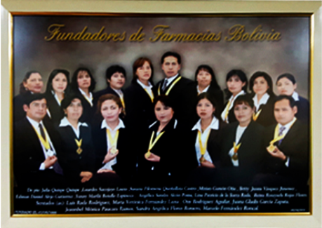

Quiénes Somos
Quiénes Somos
NUESTRA EMPRESA
Nuestra Historia
Iniciamos este gran proyecto, con Honor e Integridad un 7 de junio de 1999, su transformación esta constantemente vinculada al proceso de modernización, priorizando nuestra expansión de nuestros servicios pensando en la población boliviana, con alcance en el ámbito nacional. Preconizaremos muy pronto el vigésimo aniversario de FARMACIAS BOLIVIA; un arduo trabajo con la prioridad de la mejora continua y perseverando en alcanzar la Excelencia, para enfocarnos en Usted y ofrecerles un servicio de calidad total. Contamos con más de 100 Sucursales habiendo iniciado con 5; albergamos a más 700 trabajadores y el empiezo del proyecto fue con 35. La lucha perenne contra el contrabando de medicamentos es una tarea trascendental y la ramificación funcional está sustentada al cumplimiento de los lineamientos legales que rigen en el país.
MISIÓN
Proveer servicio de calidad plasmado en trabajo Íntegro y de Honor hacia la sociedad.
VISIÓN
Ser una Empresa de Excelencia establecida a nivel nacional e internacional, versada en un trabajo honesto, de convicción y compromiso de servicio hacia los demás.
VALORES CORPORATIVOS
- Fe
- Búsqueda de la Excelencia
- Perseverancia
- Responsabilidad
- Transparencia
- Ética
- Honestidad
- Compromiso y consecuencia
- Liderazgo
- Lealtad